Chapter 2 Data description
In this chapter, we will introduce tools for describing data.
We will do so using tables, figures, and descriptive statistics of central tendency and dispersion.
We will also introduce key concepts in statistics such as random experiments, observations, outcomes, and absolute and relative frequencies.
2.1 Scientific method
One of the goals of the scientific method is to provide a framework for solving problems that arise in the study of natural phenomena or in the design of new technologies.
Modern humans have developed a method over thousands of years that is still in development.
The method has three main human activities:
- Observation characterized by the acquisition of data
- Reason characterized by the development of mathematical models
- Action characterized by the development of new experiments (technology)
Their complex interaction and results are the basis of scientific activity.
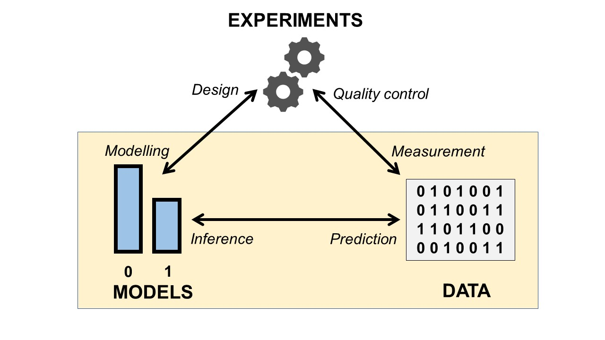
Statistics deals with the interaction between models and data (the bottom part of the figure).
The statistical questions are:
- What is the best model for my data (inference)?
- What are the data that a certain model (prediction) would produce?
2.2 Data
The data is presented in the form of observations.
An observation or realization is the acquisition of a number or characteristic from an experimental run.
For example, let’s take the series of numbers produced by repeating an experiment (1: success, 0: failure).
… 1 0 0 1 0 1 0 1 1 …
The number in bold is an observation from a repeat of the experiment.Remember that the observation is concrete is the number you get one day in the laboratory. An observation is a particular entity.
By contrast, an outcome is a possible observation that could result from the experiment.
In the example, 1 is one possible result, 0 is the other possible result of the experiment. The outcome of an experiment is abstract. You can obtain them by reasoning, no need to go to the lab. As such, the outcomes are characteristics of the experiments you are running. An outcome is a universal entity.
2.3 Result types
In statistics we are mainly interested in two types of outcomes.
Categorical: If the outcome of an experiment is a quality. They can be nominal (binary: yes, no; multiple: colors) or ordinal, when the qualities can be ranked (severity of a disease, emergency grades).
Numeric: If the outcome of an experiment is a number. The number can be discrete (number of emails received in an hour, number of leukocytes in the blood) or continuous (battery charge status, engine temperature).
2.4 Random experiments
We may boldly say that the subject matter of statistics is to gain knowledge from random experiments, the means by which we produce data.
Definition:
A random experiment is an experiment that gives a different result when repeated in the same way.
Random experiments are of different types, depending on how they are conducted:
- on the same object (person): temperature, sugar levels.
- on different objects (animals): the weight of an animal.
- on events (climate phenomena): the number of hurricanes per year.
2.5 Absolute frequencies
When we repeat a random experiment with categorical outcomes, we make a list of the results.
We summarize the observations by counting how many times we saw a particular outcome.
The absolute frequency:
\[n_i\]
is the number of times we observe the result \(i\).
Example (leukocytes)
Consider the following random experiment. Let’s extract one leukocyte from a blood sample of one donor and write down its type. Let’s repeat the experiment \(N=119\) times.
(T cell, T cell, Neutrophil, ..., B cell)The second T cell in bold is the second observation (extraction). The last B cell is observation number \(119\).
We can list the observations using a frequency table of the outcomes (categories):
## outcome ni
## 1 T Cell 34
## 2 B cell 50
## 3 basophil 20
## 4 Monocyte 5
## 5 Neutrophil 10The table is putting together the outcomes (first column) and the observations (second column). From the table, we can say that, for example, \(n_1=34\) is the total number of T cells observed in the repetition of the experiment. We also note that the total number of repetitions is \[\sum_{i=1}^M n_i= N = 119\], where \(M\) is the number of outcomes (number of rows in the table) and \(N\) the number of observations (repetitions of the random experiment). The table may be regarded as the immune profile of the donor.
2.6 Relative frequencies
We can also summarize the observations by calculating the proportion of how many times we saw a particular result.
\[f_i = \frac{n_i}{N}\]
In our example, \(n_1=34\) T cells were recorded, so we can ask about the proportion of T cells from the total number of leukocytes observed: \(119\). We can copy these proportions \(f_i\) in the frequency table.
## outcome ni fi
## 1 T Cell 34 0.28571429
## 2 B cell 50 0.42016807
## 3 basophil 20 0.16806723
## 4 Monocyte 5 0.04201681
## 5 Neutrophil 10 0.08403361Relative frequencies are fundamental in statistics. They give the proportion of one outcome in relation to the other outcomes. Later we will understand them as the observations of probabilities; or more accurately probability estimators.
For absolute and relative frequencies we have the properties
\[\sum_{i=1}^M n_i = N\]
and
\[\sum_{i=1}^M f_i = 1\]
where \(M\) is the number of outcomes.
2.7 Bar chart
When we have a lot of outcomes and want to see which ones are most likely, we can use a bar chart. This is a plot of the frequencies \(n_i\) Vs the outcomes \(i\).
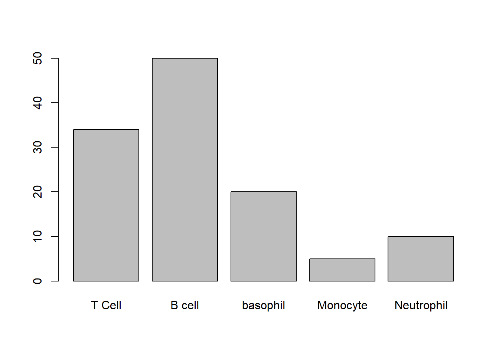
2.8 Pie chart (pie)
We can also visualize the relative frequencies \(f_i\) using a pie chart.
In the pie chart, the area of the circle represents the 100% of the observations (proportion = 1) and the sections represent the relative frequencies of each outcome.

2.9 Ordinal categorical outcomes
The leukocyte type in the examples above is a categorical nominal variable. Each observation belongs to a category (quality). The categories do not always have a certain order.
Sometimes categorical outcomes can be sorted when they have a natural ranking. This allows you to compute cumulative frequencies.
Example (misophonia)
This is a clinical study on \(123\) patients who were examined for their degree of misophonia. Misophnia is uncontrolled anxiety/anger produced by particular sounds.
Each patient was evaluated with a questionnaire (AMISO) and they were classified into 4 different groups according to severity.
The results of the study are
## [1] 4 2 0 3 0 0 2 3 0 3 0 2 2 0 2 0 0 3 3 0 3 3 2 0 0 0 4 2 2 0 2 0 0 0 3 0 2
## [38] 3 2 2 0 2 3 0 0 2 2 3 3 0 0 4 3 3 2 0 2 0 0 0 2 2 0 0 2 3 0 1 3 2 4 3 2 3
## [75] 0 2 3 2 4 1 2 0 2 0 2 0 2 2 4 3 0 3 0 0 0 2 2 1 3 0 0 3 2 1 3 0 4 4 2 3 3
## [112] 3 0 3 2 1 2 3 3 4 2 3 2Each observation is the result of the run of one particular random experiment: the measurement of the level of misophonia in a patient. This data series can be summarized using the frequency table
## outcome ni fi
## 1 0 41 0.33333333
## 2 1 5 0.04065041
## 3 2 37 0.30081301
## 4 3 31 0.25203252
## 5 4 9 0.07317073About \(25\%\) of the patients had misophonia grade 3. Note that the rows of table are ordered by the severity of the disease.
2.10 Absolute and relative cumulative frequencies
misophonia severity is categorical ordinal because its outcomes can be meaningfully ordered by their degree.
When the outcomes of a random experiment can be ordered, it is useful to ask how many observations were obtained up to a given outcome. We call this number the absolute cumulative frequency up to the outcome \(i\), and compute it with sum the relative frequencies up to \(i\) \[N_i =\sum_{k= 1}^i n_k\] It is also useful to calculate the proportion of observations up to a given result.
\[F_i =\sum_{k= 1}^i f_k\] This is called the relative cumulative frequency, or frequency distribution of the data.
We can add these frequencies to the frequency table
## outcome ni fi Ni Fi
## 0 0 41 0.33333333 41 0.3333333
## 1 1 5 0.04065041 46 0.3739837
## 2 2 37 0.30081301 83 0.6747967
## 3 3 31 0.25203252 114 0.9268293
## 4 4 9 0.07317073 123 1.0000000Therefore, 67% of patients had misophonia up to severity 2, and 37% of patients had severity less than or equal to 1.
2.11 Cumulative frequency graph
\(F_i\) is an important quantity because it allows us to define the accumulation of frequencies up to intermediate levels of the outcomes.
The frequency up to an intermediate level \(x\) (\(i\leq x< i+1\)) is just the accumulation up to the lower possible outcome of the experiment \[F_x = F_i\]
\(F_x\) is therefore a function on a continuous range of values. We can draw it with respect to the outcomes
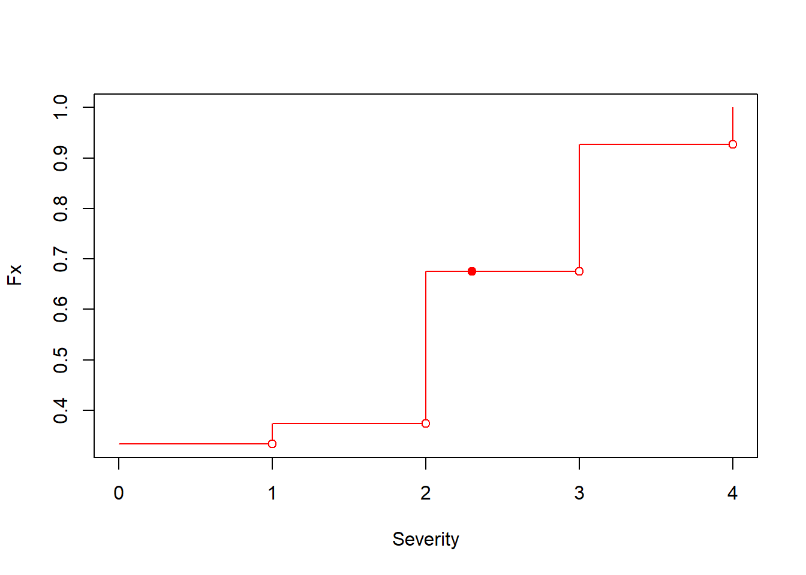
Therefore, we can say that 67% of the patients had misophonia up to severity \(2.3\), although \(2.3\) is not an observed outcome.
2.12 Numerical outcomes
The result of a random experiment can produce a number. If the number is discrete, we can generate a frequency table, with absolute, relative, and cumulative frequencies, and illustrate them with bar, pie, and cumulative charts.
When the outcome is continuous the frequency table is not so useful, because it is unlikely to obtain a repetition of the same measurement.
Example (misophonia)
The researchers wondered if the convexity of the jaw would affect the severity of misophonia. The scientific hypothesis is that the angle of convexity of the jaw can influence hearing and its sensitivity. These are the mandibular convexity observations in degrees for each patient:
## [1] 7.97 18.23 12.27 7.81 9.81 13.50 19.30 7.70 12.30 7.90 12.60 19.00
## [13] 7.27 14.00 5.40 8.00 11.20 7.75 7.94 16.69 7.62 7.02 7.00 19.20
## [25] 7.96 14.70 7.24 7.80 7.90 4.70 4.40 14.00 14.40 16.00 1.40 9.76
## [37] 7.90 7.90 7.40 6.30 7.76 7.30 7.00 11.23 16.00 7.90 7.29 6.91
## [49] 7.10 13.40 11.60 -1.00 6.00 7.82 4.80 11.00 9.00 11.50 16.00 15.00
## [61] 1.40 16.80 7.70 16.14 7.12 -1.00 17.00 9.26 18.70 3.40 21.30 7.50
## [73] 6.03 7.50 19.00 19.01 8.10 7.80 6.10 15.26 7.95 18.00 4.60 15.00
## [85] 7.50 8.00 16.80 8.54 7.00 18.30 7.80 16.00 14.00 12.30 11.40 8.50
## [97] 7.00 7.96 17.60 10.00 3.50 6.70 17.00 20.26 6.64 1.80 7.02 2.46
## [109] 19.00 17.86 6.10 6.64 12.00 6.60 8.70 14.05 7.20 19.70 7.70 6.02
## [121] 2.50 19.00 6.80while, in these set of observations, we see the repetition of the convexity degree \(7.90\), this is a result of measurement rounding or limited instrument resolution. Degrees are continuous and it is unlikely that to patients have the same value of convexity, if we had sufficient resolution.
2.13 Transforming continuous data
Since observations of continuous outcomes cannot be counted in frequencies (at least by definition), we may transform them into ordered categorical outcomes.
- First we cover the range of observations in regular intervals of the same size (bins)
## [1] "[-1.02,3.46]" "(3.46,7.92]" "(7.92,12.4]" "(12.4,16.8]" "(16.8,21.3]"- Then we map each observation to its interval: creating a categorical ordered outcomes; in this case we have 5 possible outcomes
## [1] "(7.92,12.4]" "(16.8,21.3]" "(7.92,12.4]" "(3.46,7.92]" "(7.92,12.4]"
## [6] "(12.4,16.8]" "(16.8,21.3]" "(3.46,7.92]" "(7.92,12.4]" "(3.46,7.92]"
## [11] "(12.4,16.8]" "(16.8,21.3]" "(3.46,7.92]" "(12.4,16.8]" "(3.46,7.92]"
## [16] "(7.92,12.4]" "(7.92,12.4]" "(3.46,7.92]" "(7.92,12.4]" "(12.4,16.8]"
## [21] "(3.46,7.92]" "(3.46,7.92]" "(3.46,7.92]" "(16.8,21.3]" "(7.92,12.4]"
## [26] "(12.4,16.8]" "(3.46,7.92]" "(3.46,7.92]" "(3.46,7.92]" "(3.46,7.92]"
## [31] "(3.46,7.92]" "(12.4,16.8]" "(12.4,16.8]" "(12.4,16.8]" "[-1.02,3.46]"
## [36] "(7.92,12.4]" "(3.46,7.92]" "(3.46,7.92]" "(3.46,7.92]" "(3.46,7.92]"
## [41] "(3.46,7.92]" "(3.46,7.92]" "(3.46,7.92]" "(7.92,12.4]" "(12.4,16.8]"
## [46] "(3.46,7.92]" "(3.46,7.92]" "(3.46,7.92]" "(3.46,7.92]" "(12.4,16.8]"
## [51] "(7.92,12.4]" "[-1.02,3.46]" "(3.46,7.92]" "(3.46,7.92]" "(3.46,7.92]"
## [56] "(7.92,12.4]" "(7.92,12.4]" "(7.92,12.4]" "(12.4,16.8]" "(12.4,16.8]"
## [61] "[-1.02,3.46]" "(12.4,16.8]" "(3.46,7.92]" "(12.4,16.8]" "(3.46,7.92]"
## [66] "[-1.02,3.46]" "(16.8,21.3]" "(7.92,12.4]" "(16.8,21.3]" "[-1.02,3.46]"
## [71] "(16.8,21.3]" "(3.46,7.92]" "(3.46,7.92]" "(3.46,7.92]" "(16.8,21.3]"
## [76] "(16.8,21.3]" "(7.92,12.4]" "(3.46,7.92]" "(3.46,7.92]" "(12.4,16.8]"
## [81] "(7.92,12.4]" "(16.8,21.3]" "(3.46,7.92]" "(12.4,16.8]" "(3.46,7.92]"
## [86] "(7.92,12.4]" "(12.4,16.8]" "(7.92,12.4]" "(3.46,7.92]" "(16.8,21.3]"
## [91] "(3.46,7.92]" "(12.4,16.8]" "(12.4,16.8]" "(7.92,12.4]" "(7.92,12.4]"
## [96] "(7.92,12.4]" "(3.46,7.92]" "(7.92,12.4]" "(16.8,21.3]" "(7.92,12.4]"
## [101] "(3.46,7.92]" "(3.46,7.92]" "(16.8,21.3]" "(16.8,21.3]" "(3.46,7.92]"
## [106] "[-1.02,3.46]" "(3.46,7.92]" "[-1.02,3.46]" "(16.8,21.3]" "(16.8,21.3]"
## [111] "(3.46,7.92]" "(3.46,7.92]" "(7.92,12.4]" "(3.46,7.92]" "(7.92,12.4]"
## [116] "(12.4,16.8]" "(3.46,7.92]" "(16.8,21.3]" "(3.46,7.92]" "(3.46,7.92]"
## [121] "[-1.02,3.46]" "(16.8,21.3]" "(3.46,7.92]"Therefore, instead of saying that the first patient had an angle of convexity of \(7.97\), we say that his angle was in the interval (or bin) between \((7.92,12.4]\).
No other patients had an angle of \(7.97\) degrees, but many had angles between \((7.92,12.4]\).
2.14 Frequency table for a continuous variable
For a given regular partition of the range of the continuous outcomes into intervals, we can produce a frequency table as before
## outcome ni fi Ni Fi
## 1 [-1.02,3.46] 8 0.06504065 8 0.06504065
## 2 (3.46,7.92] 51 0.41463415 59 0.47967480
## 3 (7.92,12.4] 26 0.21138211 85 0.69105691
## 4 (12.4,16.8] 20 0.16260163 105 0.85365854
## 5 (16.8,21.3] 18 0.14634146 123 1.000000002.15 Histogram
The histogram is the graph of \(n_i\) or \(f_i\) Vs the interval outcomes (bins). The histogram depends on the size of the bin.

This is a histogram with 20 bins .
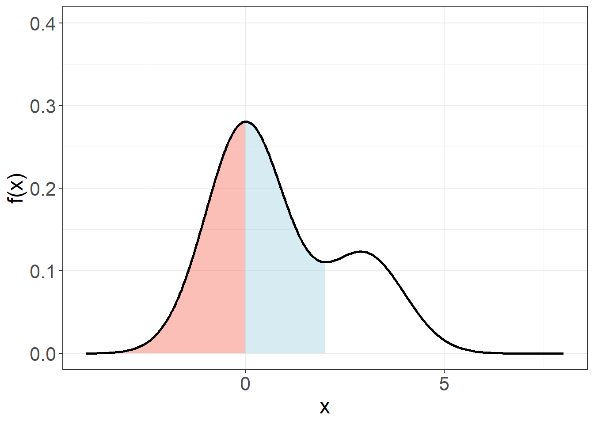
We see that most people have angles in the interval \((7, 8]\).
2.16 Cumulative frequency graph
We can also plot \(F_x\) against the outcomes. Since \(F_x\) has a continuous range, we can order the observations (\(x_1 <... x_j < x_{j+1} < x_n\)) and therefore
\[F_x = \frac{k}{ n}\]
for \(x_{k} \leq x < x_{k+ 1}\) .
\(F_x\) is known as the distribution of the data. \(F_x\) does not depend on the size of the bin. However, its resolution depends on the amount of data.
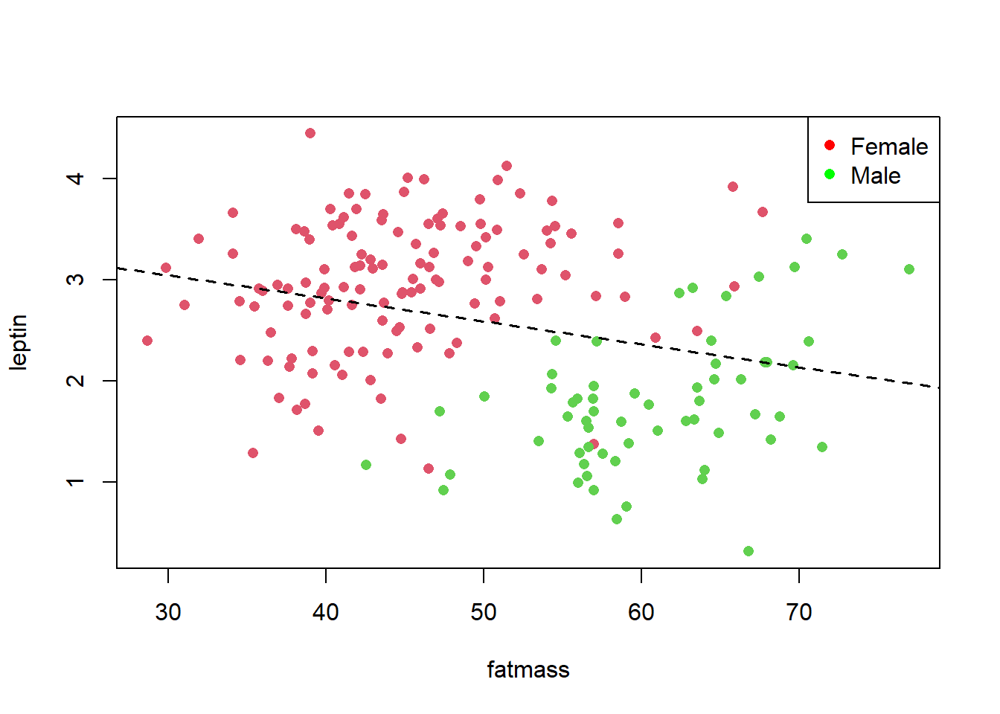
2.17 Summary Statistics
Summary statistics are numbers calculated from the data that tell us important characteristics of the numerical outcomes (discrete or continuous).
For example, we have statistics that describe extreme values:
- minimum: the minimum observation.
- maximum: the maximum observation.
2.18 Average (sample mean)
An important statistic that describes the central value of the observations (where to expect most observations) is the average
\[\bar{x}=\frac{1}{N} \sum_{j=1}^N x_j\]
where \(x_j\) is the observation \(j\) from a total of \(N\) observations. We also call the average the sample mean. The sample is the set of observations, or the data obtained from the repetition of the random experiment.
Example (misophonia)
The average convexity can be calculated directly from the observations in the usual way
\(\bar{x}= \frac{1}{ N}\sum_j x_j\)
\(= \frac{1}{123}( 7.97 + 18.23 + 12.27... + 6.80) = 10.19894\)
For categorically ordered outcomes, we can also use the relative frequencies to calculate the average
\(\bar{x}=\frac{1}{ N}\sum_{i=1}^N x_j =\frac{1}{N}\sum_{i=1}^M x_i n_ {i}=\)
\[\sum_{i=1}^M x_i f_{i}\]
where we went from adding \(N\) observations to adding \(M\) outcomes.
The form \(\bar{x}= \sum_{i = 1}^M x_i f_i\) shows that the average is the center of mass of the data. As if each observation had a mass density given by \(f_i\).
Example (misophonia)
The average severity of misophonia in the study can be calculated from the relative frequencies of the outcomes
## outcome ni fi
## 1 0 41 0.33333333
## 2 1 5 0.04065041
## 3 2 37 0.30081301
## 4 3 31 0.25203252
## 5 4 9 0.07317073
\(\bar{x}=0\times f_ {0}+ 1\times f_{1}+2 \times f_{2}+3 \times f_{3}+4 \times f_{4}=1.691057\)
The average is also the center of mass for continuous outcomes; that is, the point where the relative frequencies of the bins balance.

2.19 Median
Another measure of centrality is the median. The median \(x_m\), or \(q_{0.5}\), is the value below which we find half of the observations. When we order the observations \(x_1 <... x_j < x_{j+1} < x_N\), we count them until we find half of them, then we report that value \(x_m\). Therefore, \(x_m\) is the observation such that \(m\) satisfies
\[\sum_{i\leq m} 1 = \frac{N}{2}\] Example (misophonia)
If we order the angles of convexity and cut them in half, we see that \(62\) observations (individuals) (\(N/2 \sim 123/2\)) are below \(7.96\). The median convexity is therefore \(q_{0.5}= x_{62}=7.96\)
## [1] -1.00 -1.00 1.40 1.40 1.80 2.46 2.50 3.40 3.50 4.40 4.60 4.70
## [13] 4.80 5.40 6.00 6.02 6.03 6.10 6.10 6.30 6.60 6.64 6.64 6.70
## [25] 6.80 6.91 7.00 7.00 7.00 7.00 7.02 7.02 7.10 7.12 7.20 7.24
## [37] 7.27 7.29 7.30 7.40 7.50 7.50 7.50 7.62 7.70 7.70 7.70 7.75
## [49] 7.76 7.80 7.80 7.80 7.81 7.82 7.90 7.90 7.90 7.90 7.90 7.94
## [61] 7.95 7.96## [1] 7.96 7.97 8.00 8.00 8.10 8.50 8.54 8.70 9.00 9.26 9.76 9.81
## [13] 10.00 11.00 11.20 11.23 11.40 11.50 11.60 12.00 12.27 12.30 12.30 12.60
## [25] 13.40 13.50 14.00 14.00 14.00 14.05 14.40 14.70 15.00 15.00 15.26 16.00
## [37] 16.00 16.00 16.00 16.14 16.69 16.80 16.80 17.00 17.00 17.60 17.86 18.00
## [49] 18.23 18.30 18.70 19.00 19.00 19.00 19.00 19.01 19.20 19.30 19.70 20.26
## [61] 21.30We thus cut the data at
## [1] 7.96to split them in half.
In terms of frequencies, \(q_{0.5}\) makes the cumulative frequency \(F_x\) equal to \(0.5\)
\[\sum_{i = 1}^m f_i =F_{q_{0.5}}=0.5\] that is
\[q_{ 0.5}= F^{-1}(0.5)\]
This last equation means that, in the distribution graph, the median \(q_{ 0.5}\) is the value of \(x\) at which we have climbed half of the total height of \(F_x\). We have accumulated half of the observations.
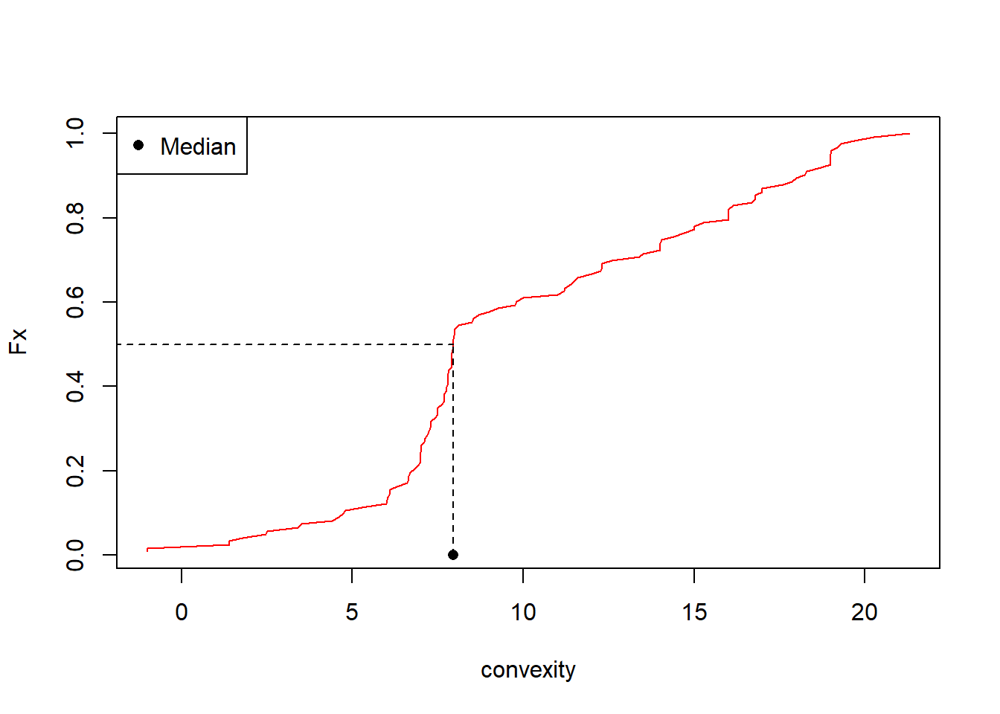
The average and median are not always the same.
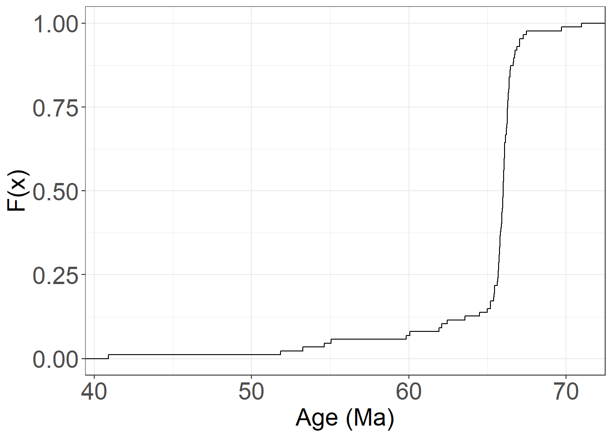
2.20 Dispersion
Other important summary statistics for observations are the spread statistics.
Many experiments may share their average, but differ in how sparse the values are.
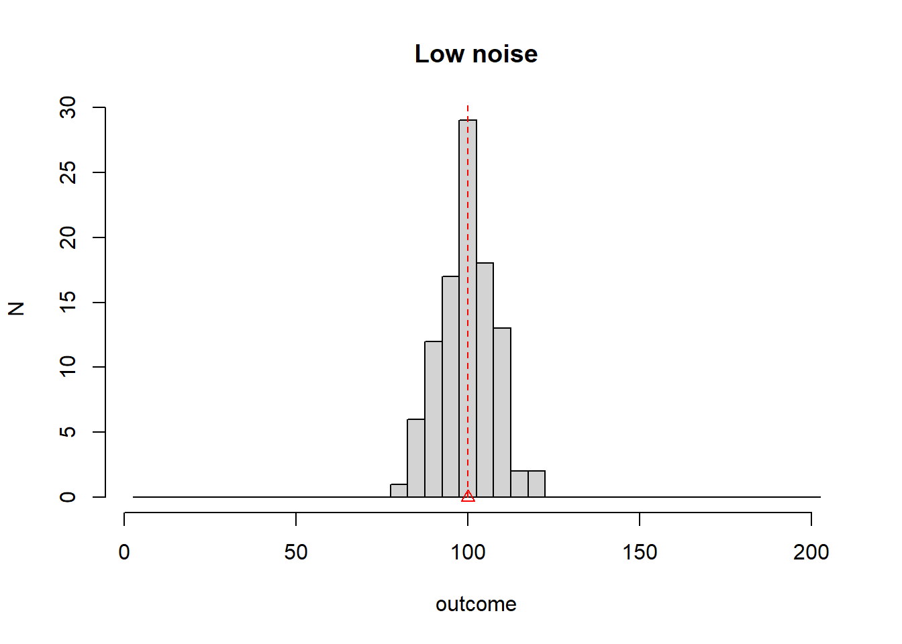
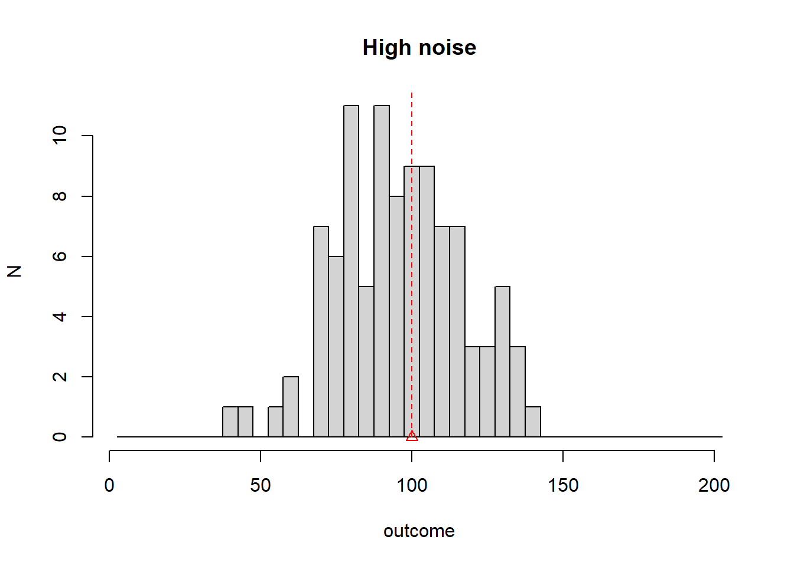
The dispersion of the observations is a measure of the noise or randomness of the experiment. If there is no spread, the random experiment gives always the same outcome and there is no need to learn statistics.
2.21 Sample variance
The dispersion about the average is measured by the sample variance
\[s^2=\frac{ 1}{ N-1} \sum_{j=1}^N ( x_j -\bar{x})^2\]
This number measures the average squared distance of the observations from the average. The reason for \(N-1\) will be explained when we talk about inference, when we study the spread of \(\bar{x}\), as well as the spread of the observations.
In terms of the frequencies of the outcomes that are categorical and ordered, we can also calculate the sample variance as
\[s^2=\frac{N}{N-1} \sum_{i=1}^M (x_i -\bar{x})^2 f_i\]
Take many observations and then make \(N/(N+1)\) close to \(a\), then \(s^2\) can be considered as the moment of inertia about the average of the observations.
The square root of the sample variance, \(s\), is called standard deviation of the sample.
Example (misophonia)
The standard deviation of the convexity angle is
\(s= [\frac{ 1}{123-1}((7.97-10.19894)^2+ (18.23-10.19894)^2\) \[+ (12.27-10.19894 )^ 2 + ...)]^{1/2} = 5.086707\]
The jaw convexity deviates from its average by \(5.086707\).
2.22 Interquartile range (IQR)
The spread of the data can also be measured with respect to the median using the interquartile range:
- We define the first quartile as the value \(x\) that makes the cumulative frequency \(F_{q_{0.25}}\) equal to \(0.25\), or the value of \(x\) where we have accumulated a quarter of the observations, or the value that splits the first quarter of the observations.
\[q_{0.25}=F^{-1}(0.25)\]
- We define the third quartile as the value \(x\) that makes the cumulative frequency \(F_{q_{0.75}}\) equal to \(0.75\), or the value of \(x\) where we have accumulated three quarters of observations.
\[q_{0.75}=F^{-1}(0.75)\]
- The interquartile range (IQR) is \[IQR=q_{0.75} - q_{0.25}\]
This is the distance between the third and first quartiles and captures the central \(50\%\) of the observations
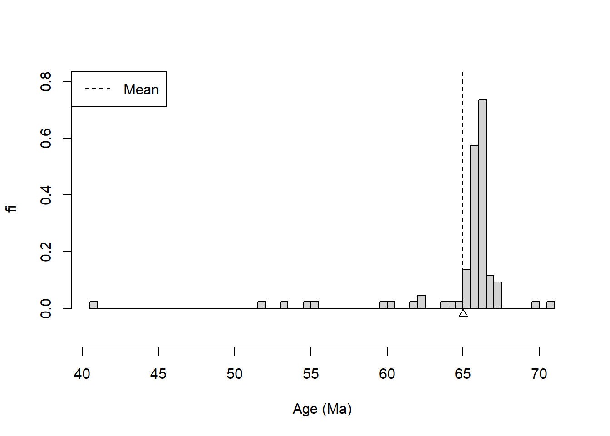
2.23 Boxplot
The interquartile range, median, and \(5\%\) and \(95\%\) of the data can be displayed in a box plot.
In the boxplot, the values of the outcomes are on the y-axis. The IQR is the box, the median is the middle line, and the whiskers mark the \(5\%\) and \(95\%\) of the data.
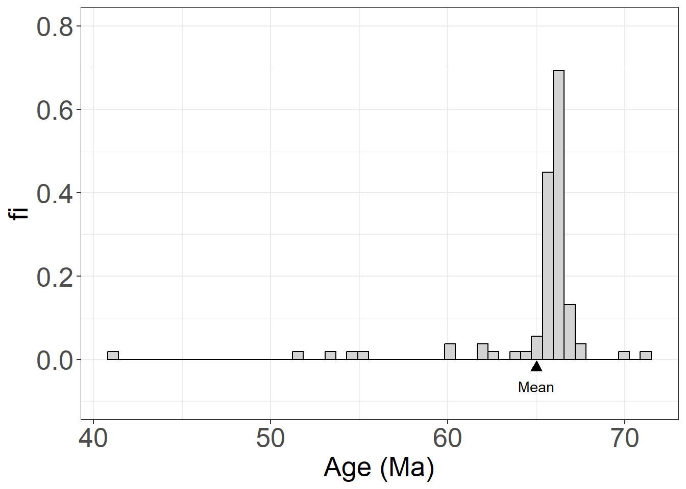
2.24 Questions
1) In the following boxplot, the first quartile and second quartile of the data are:
\(\qquad\)a: \((-1.00, 21.30)\); \(\qquad\)b: \((-1.00, 7.02)\); \(\qquad\)c: \((7.02, 7.96)\); \(\qquad\)d: \((7.02, 14.22)\)

2) The main disadvantage of a histogram is that:
\(\qquad\) a : Depends on the size of the bin ; \(\qquad\)b : Cannot be used for categorical outcome; \(\qquad\) c : Cannot be used when the bin size is small; \(\qquad\) d : Used only for relative frequencies;
3) If the relative cumulative frequencies of a random experiment with outcomes \(\{1,2,3,4\}\) are: \(F(1)=0.15, \qquad F(2)=0.60, \qquad F(3)=0.85, \qquad F(4)=1\).
Then the relative frequency for the outcome \(3\) is
\(\qquad\)a: \(0.15\); \(\qquad\)b: \(0.85\); \(\qquad\)c: \(0.45\); \(\qquad\)d: \(0.25\)
4) In a sample of size \(10\) from a random experiment we obtained the following data:
\(8, \qquad 3, \qquad 3, \qquad 7, \qquad 3, \qquad 6, \qquad 5, \qquad 10, \qquad 3, \qquad 8\).
The first quartile of the data is:
\(\qquad\)a: \(3.5\); \(\qquad\)b: \(4\); \(\qquad\)c: \(5\); \(\qquad\)d: \(3\)
5) Imagine that we collect data for two quantities that are not mutually exclusive, for example, the gender and nationality of passengers on a flight. If we want to make a single pie chart for the data, which of these statements is true?
\(\qquad\)a : We can only make a nationality pie chart because it has more than two possible outcomes;
\(\qquad\)b : We can make a pie graph for a new variable marking gender and nationality;
\(\qquad\)c : We can make a pie chart for the variable sex or the variable nationality;
\(\qquad\)d : We can only choose whether to make a pie chart for gender or a pie chart for nationality.
2.25 Exercises
2.25.0.1 Exercise 1
We have performed an experiment 8 times with the following results
## [1] 3 3 10 2 6 11 5 4Answer the following questions:
- Calculate the relative frequencies of each result.
- Calculate the cumulative frequencies of each result.
- What is the average of the observations?
- What is the median?
- What is the third quartile?
- What is the first quartile?
2.25.0.2 Exercise 2
We have performed an experiment 10 times with the following results
## [1] 2.875775 7.883051 4.089769 8.830174 9.404673 0.455565 5.281055 8.924190
## [9] 5.514350 4.566147Consider 10 bins of size 1: [0,1], (1,2] …( 9,10).
Answer the following questions:
Calculate the relative frequencies of each result and draw the histogram
Calculate the cumulative frequencies of each result and draw the cumulative graph.
Draw a box plot .
2.26 Practice
Load misophonia data from https://alejandro-isglobal.github.io/SDA/data/data_0.txt
- Extract misophonia variable (Misofonia.dic)
- Do a bar plot and a pie chart
- Extract convexity angle variable (Angulo\(\_\)convexidad)
- Calculate its sample mean (average), standard deviation and make a histogram
- Calculate its median and inter-quartile range
- Draw a boxplot